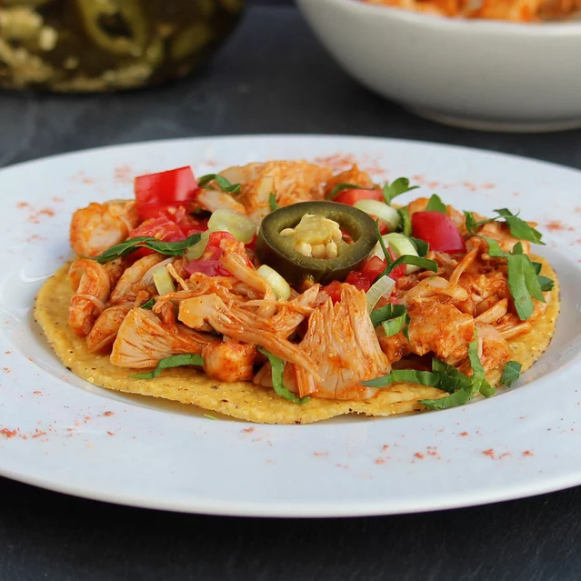

Jackfruit Tacos

Jackfruit is a great alternative to shredded chicken to use in tacos. These jackfruit tacos are delicious! Choose
your favorite taco toppings, such as lettuce, tomato, cilantro, avocado, cheese, and sour cream.
Ingredients
- 2 cans jackfruit brine-drained, rinsed and cut into bite sized pieces
- 1 tablespoon vegetable oil
- 1 tablespoon water
- 2 tablespoons taco seasoning mix
- 4 taco shells
- 1/2 cup salsa
Directions
- Heat oil in a small saucepan over medium heat. Add jackfruit; cook and stir for 2 to 3 minutes. Add 1
tablespoon water and taco seasoning; stir until well combined, about 1 minute. Add additional water 1
tablespoon at a time as needed.
- Place a small amount of jackfruit in each taco shell; add 2 tablespoons salsa.